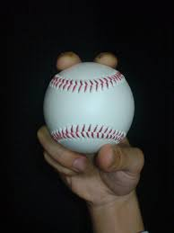
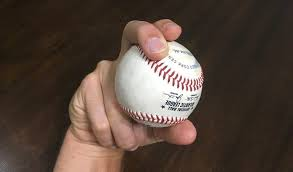
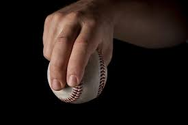
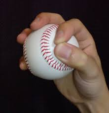

Fastball

| Grip | places the index and middle fingers across the horseshoe seam for maximum velocity and control, with the thumb directly underneath for stability. |
|---|---|
| Purpose | to challenge hitters with maximum velocity and precise location, aiming to secure strikeouts or weak contact through late, missed swings. |
| Motion | a full-body kinetic sequence where energy travels from your feet, through your core, and finally into your arm to maximize velocity |
Curveball

| Grip | The standard curveball grip relies on the middle finger and thumb to generate heavy topspin. While there are several variations, the core goal is to "rip" the ball downward to create vertical depth. |
|---|---|
| Purpose | The primary purpose of a curveball is to deceive the hitter by disrupting their timing and tracking. Unlike a fastball, which relies on velocity and backspin to stay high and straight, a curveball uses topspin to create a dramatic downward "break" as it reaches the plate. |
| Motion | The curveball motion is designed to create heavy topspin by altering your hand's position at release while maintaining the same arm speed as a fastball. To achieve a sharp break, the motion focuses on a "karate chop" action rather than a twisting or snapping of the wrist. |
Slider

| Grip | The standard slider grip involves placing your fingers off-center on the baseball to create a combination of side-spin and "gyro" (bullet) spin. This off-center placement allows you to "cut" the ball in half with your fingers, leading to a sharp, late break toward your glove side. |
|---|---|
| Purpose | The slider is a high-velocity breaking pitch designed to look like a fastball for most of its flight before making a sharp, late break toward the pitcher's glove side. It is widely considered one of the most effective "out pitches" in baseball. |
| Motion | In baseball, the pitching arm motion is a highly coordinated, full-body kinetic sequence divided into six distinct phases. The goal of this sequence is to transfer energy from the ground and lower body through the core and finally into the arm to maximize velocity at ball release. |
Change Up

| Grip | The primary goal of a changeup grip is to deaden the ball and reduce velocity by holding it deeper in the hand or using less powerful fingers. Unlike fastballs that use the index and middle fingers for power, changeups shift the workload to the middle, ring, and even pinky fingers. |
|---|---|
| Purpose | The primary purpose of a changeup is to disrupt a hitter's timing and rhythm. By mimicking the delivery and arm speed of a fastball while traveling 8–15 mph slower, it deceives the batter into swinging prematurely. |
| Motion | The throwing arm motion for a changeup must be an exact replica of your fastball motion to deceive the hitter. The reduction in speed should come entirely from the grip and hand action at release, not from slowing down your arm. |